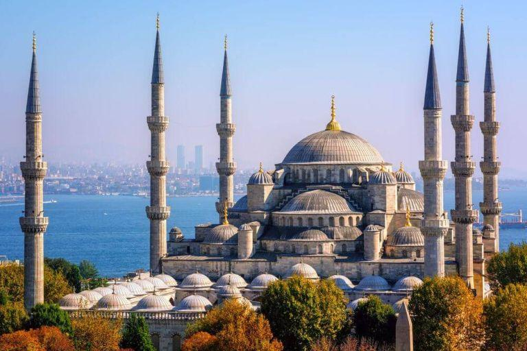
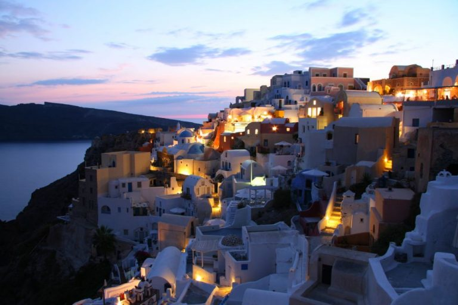
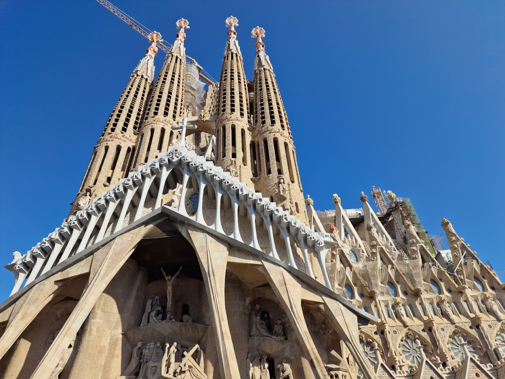

Scaldata in lumina soarelui mediteranean, Turcia este supranumita leaganul civilizatiei, acumuland in timp o bogata mostenire culturala datorita contactului cu unele dintre cele mai graitoare civilizatii ale tuturor timpurilor. Astfel, meleagurile turcesti ofera vacante pe placul tuturor turistilor, fie ei iubitori de plaja si soare, istorici, pasionati ai sporturilor nautice sau amatori ai fotografiei. Nu este de mirare ca Turcia a devenit una dintre cele mai populare destinatii de vacanta, hranind dorinta de relaxare, aventura si mister a oricarui turist. Daca vrei sa alegi Turcia ca urmatoarea ta destinatie de vacanta, iata tot ce trebuie sa stii!
Daca te intrebi cand este mai bine sa faci o excursie in Grecia, raspunsul depinde de regiunea unde vrei sa mergi. Clima este in general blanda si cuprinde caracteristici alpine, mediteraneene si temperate. Poti sa alegi orice perioada a anului pentru vacante in Grecia, dar cele mai indicate sunt lunile aprilie-octombrie. Un sejur in Grecia este un spectacol marin prin excelenta, pentru ca acest taram mitic este inconjurat de Marea Egee la est, Marea Mediterana la sud si Marea Ionica in regiunea vestica. Si daca mai aveai nevoie de inca un motiv pentru un concediu in Grecia, trebuie sa stii ca aceasta tara are 80% din suprafata de teren acoperita de relief montan.
Spania, în mod oficial Regatul Spaniei, este o țară din sud-vestul Europei, cu câteva mici teritorii peste Strâmtoarea Gibraltar și în Oceanul Atlantic. Teritoriul său continental european este situat în Peninsula Iberică.
